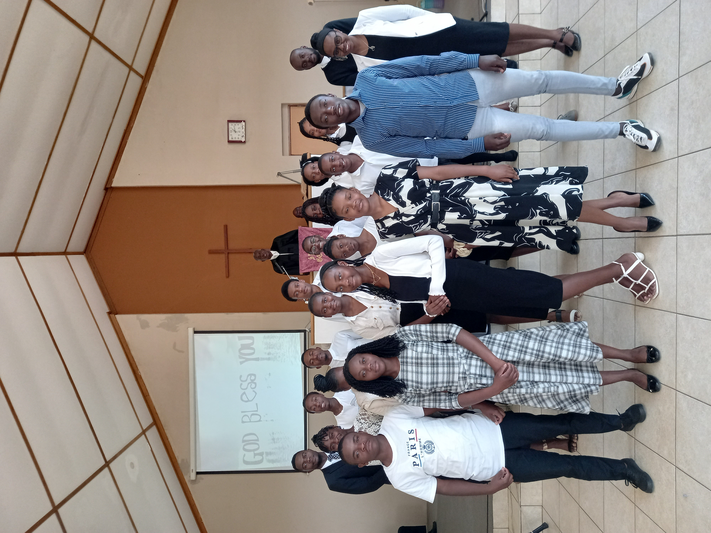

Ministries
Sunday School
Goal
Inspiring our children and Youth to be true followers of Jesus Christ
Christian Youth Ministries
Motto
Let CYM live and not die
Mission Statement
To act as an ambassador for the URCSA Katutura in spreading the word of God in singing and preaching
General Attitude
Members should show pride and loyalty towards the CYM and committee. All are expected to be diligent, disciplined and respectful towards each other at all times.
Bible reference verse
Philippians 4:13 “I can do all things through Christ who strengthens me”
Committee Members
| Position | Member(s) |
|---|---|
| Chairperson | Richard |
| Vice-chair | Manuel |
| Secretary | Lusia |
| Vice Secretary | Ondina |
| Treasurer | Annabella |
| Vice Treasurer | Amelia |
| Additional members | Melquisedek |
| Cynthia |
Christian Women Ministries
Motto
Women in service of Christ and His Church
Values
The CWM of the URCSA is founded upon the following values:
- Faith in the Divine God (Father, Son and the Holy Spirit)
- Patience and dedication to the service of God
- Humility and humbleness, in serving God and one another
- Love, goodness and care towards others
- Trustfulness, trustworthiness towards one another
- Respect for oneself and one another
Vision
To be a Christian Women’s Ministry that strives to be dynamic in unity, reconciliation, justice and obedience.
Mission
Worship, build the faith and the spirituality of the women so that they can be faithful witnesses for the Christ in the church and in the society, oppose that which is in conflict with the Christian faith both within and outside the church of Christ.
Work in partnership with the other ministries within and with the church in its ecumenical relations in building a community of believers where the walls of gender, race, language and culture are demolished and equality acknowledged.
| Position | Member(s) |
|---|---|
| Chairperson | Mrs. Anna Libana |
| Vice-Chairperson | Mrs. Aida Situmba |
| Treasurer | Mrs. A. Dongua |
| Vice-Treasurer | Mrs. Piedade Sequeira |
| Secretary | Mrs. J. Munepapa |
| Vice Secretary | Mrs. P. Haikali |
| Additional members | Mrs. Lydia Jansen |
| Mrs. Sarah Antonio |
Christian Men Ministries
| Members |
|---|
| Mr. A. Samuel (Chairperson) |
| Deacon João da Silva (Treasurer) |
| Elder D. Dongua (Secretary) |
| Mr. Maxiomo Varela |
| Elder J. Libana |
| Elder N. Carlos |
| Deacon P. Hamukuaja |
| Mr. Brown Martins |
| Mr. Satuta Florindo |
| Mr. Paul Situmba |
| Mr. Amarildo De Almeida |
| Mr. Oswald Antonio |
| Rev. B Tjingaete |